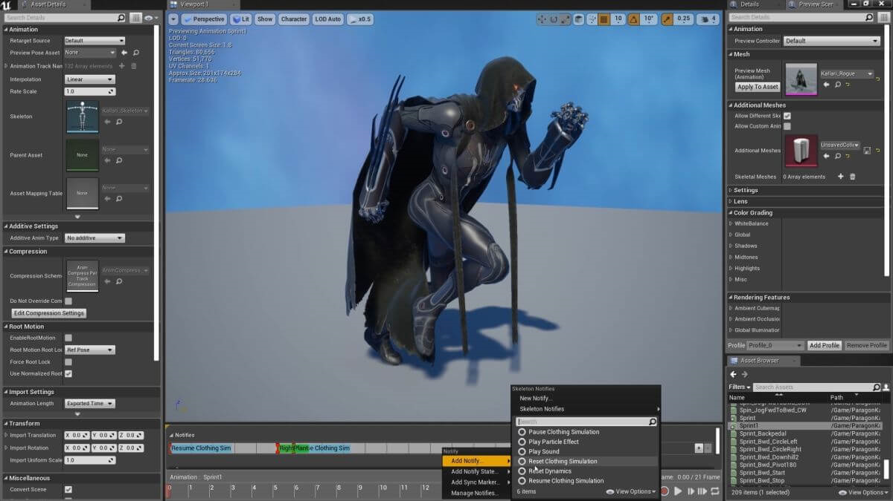

UNREAL ENGINE
Unreal Engine Nedir?
Unreal Engine, Epic Games tarafından geliştirilen popüler ve yaygın olarak kullanılan bir oyun motorudur.
Epic’in kendi çoklu oyunculu oyunu olan Fortnite gibi birçok modern AAA oyununda veya Psyonix’in ‘Rocket League’
gibi diğer hit oyunlarda ve piyasada diğer büyük stüdyolarda geliştirilen oyunlarda kullanılır.
PC’den PS4’e, Xbox One ‘dan, Nintendo Switch’e kadar bir çok konsol ve yapıda oyun geliştirme olanağı sağlar.
Bu platformlara IOS ve Android uygulama ve oyunları da dahildir.
Unreal motorunun farklı platformlar arasında çalışma esnekliği, piyasada çokça kullanılmasının bir sebebidir.
Unreal Engine Sanal Gerçeklik ve Çevre (Dünya) Tasarımı
Ayrıca sanal veya artırılmış gerçeklik için yapılanmayı çok daha kolay hale getiren araçları da vardır.
Son yıllarda VR popülaritesinin yükselmesi göz ardı edilemez, bu nedenle,
Oculus Rift ve HTC Vive gibi platformlar için, kolayca içerik üretmenize yardımcı olabilecek
bir motora sahip olmanız her zaman yararlıdır. Bu sistem VR oyunları içinde kullanılabilir bir
altyapı sunarak, sahnelerdeki etkileşimleri kolayca yaratmanıza olanak sağlar.
Unreal Engine ayrıca kendi arazinizi kolaylıkla oluşturmanıza olanak sağlayan araçlara sahiptir.
Kendi malzemelerinizi farenizle boyayabilirsiniz. Örneğin çimenin yavaşça toprakla bütünleşmesi için
harmanlayabilirsiniz.Daha sonra ağaç ve otların ağlarını kullanabilir, ormanları veya çiçek parçalarını
boyayabilirsiniz. Dış mekan sahnelerini birkaç dakika içinde yapabilirsiniz ve
Unreal Engine ile birlikte gelen bitki ağlarını kullanıyorsanız, oyununuzda çalışacak şekilde
optimize edildiği için rahatlıkla kullanabilirsiniz.
Unreal Engine özellikleri ve yaygın kullanım alanları
Unreal Engine ‘de, sanatsal ve gelişim odaklı araçların karışımı tamamen yaratıcı esneklik sağlar.
Malzeme ve işleme için yaygın olarak kabul edilen PBR (fiziksel tabanlı işleme) iş akışını kullanır.
Bu sayede, gerçek zamanlı olarak inanılmaz fotogerçekçi görünümler yaratılmasını sağlar.
Ayrıca son güncellemeler ile birlikte gelen Raytracing (ışın izleme), gerçekciliği en üst düzeye taşımıştır.
Daha önce bahsettiğimiz Blueprints özelliği, birbiriyle etkileşime giren basit komut dosyaları
oluşturmanıza olanak tanır. Bunların hepsi görsel bir ara yüz kullanır, böylece hayatınızda hiç bir
kod bilgisine sahip olmasanız bile, birkaç kısa unreal engine tutorial ‘dan alacağınız bilgi
ile oyununuza etkileşim katabilirsiniz.
Unreal Engine, yumuşak vücut fiziğine, parçacık efektlerine ve yerçekimi gibi daha
basit şeylere izin veren iyi bir fizik motoruna sahiptir. Örneğin itilmeye tepki veren bir salıncak gibi
herhangi bir nesne yapmak oldukça kolaydır. Unreal ara yüzünü öğrendikten sonra, her şeyin daha kolay
olacağını söyleyebiliriz.
